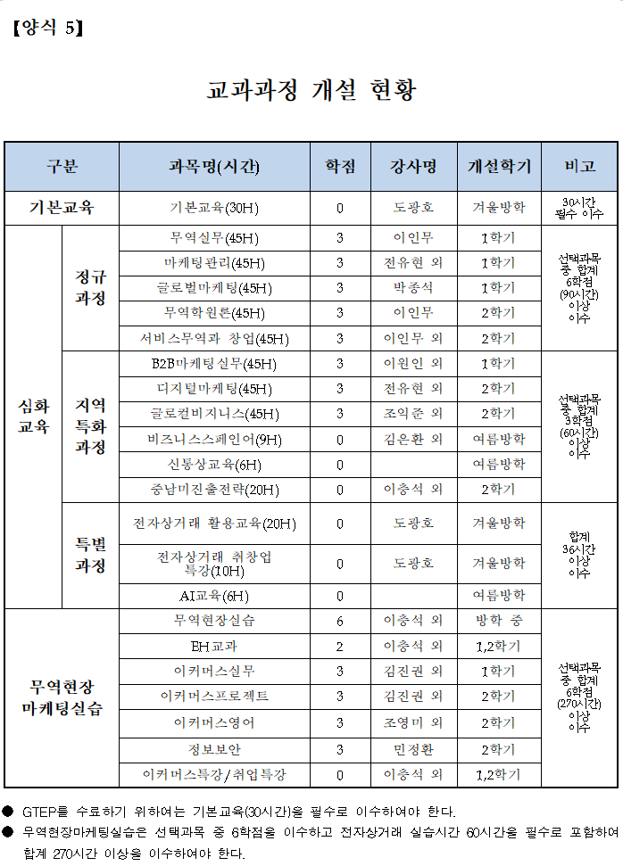

교과과정
기초 무역을 익힌 뒤, 특화지역 시장을 공부하고 협력기업의 제품으로 해외 마케팅을 실습합니다.
30시간기초교육
180시간 이상심화교육
270시간 이상무역현장 마케팅 실습
교과과정 개설 현황
한국공학대학교 GTEP사업단의 과목별 학점, 강사, 개설학기입니다.
| 구분 | 과목명(시간) | 학점 | 강사명 | 개설학기 | 비고 | |
|---|---|---|---|---|---|---|
| 기본교육 | 기본교육(30H) | 0 | 도광호 | 겨울방학 | 30시간 필수 이수 | |
| 심화교육 | 정규과정 | 무역실무(45H) | 3 | 이인무 | 1학기 | 선택과목 중 합계 6학점(90시간) 이상 이수 |
| 마케팅관리(45H) | 3 | 전유현 외 | 1학기 | |||
| 글로벌마케팅(45H) | 3 | 박종식 | 1학기 | |||
| 무역학원론(45H) | 3 | 이인무 | 2학기 | |||
| 서비스무역과 창업(45H) | 3 | 이인무 외 | 2학기 | |||
| 지역특화과정 | B2B마케팅실무(45H) | 3 | 이원인 외 | 1학기 | 선택과목 중 합계 3학점(60시간) 이상 이수 | |
| 디지털마케팅(45H) | 3 | 전유현 외 | 2학기 | |||
| 글로컬비지니스(45H) | 3 | 조익준 외 | 2학기 | |||
| 비즈니스스페인어(9H) | 0 | 김은환 외 | 여름방학 | |||
| 신통상교육(6H) | 0 | - | 여름방학 | |||
| 중남미진출전략(20H) | 0 | 이충석 외 | 2학기 | |||
| 특별과정 | 전자상거래 활용교육(20H) | 0 | 도광호 | 겨울방학 | 합계 36시간 이상 이수 | |
| 전자상거래 취창업 특강(10H) | 0 | 도광호 | 겨울방학 | |||
| AI교육(6H) | 0 | - | 여름방학 | |||
| 무역현장 마케팅실습 | 무역현장실습 | 6 | 이충석 외 | 방학 중 | 선택과목 중 합계 6학점(270시간) 이상 이수 | |
| EH교과 | 2 | 이충석 외 | 1,2학기 | |||
| 이커머스실무 | 3 | 김진권 외 | 1학기 | |||
| 이커머스프로젝트 | 3 | 김진권 외 | 2학기 | |||
| 이커머스영어 | 3 | 조영미 외 | 2학기 | |||
| 정보보안 | 3 | 민정환 | 2학기 | |||
| 이커머스특강/취업특강 | 0 | 이충석 외 | 1,2학기 | |||
- GTEP를 수료하려면 기본교육(30시간)을 필수로 이수해야 합니다.
- 무역현장 마케팅실습은 선택과목 중 6학점을 이수하고, 전자상거래 실습시간 60시간을 필수로 포함해 합계 270시간 이상을 이수해야 합니다.
원본 표 이미지 보기

한국공학대에서 배우는 과목
무역실무, 글로벌마케팅, B2B 마케팅실무, 디지털마케팅, 중남미 비즈니스 전략, 비즈니스 스페인어
주요 프로그램
아마존·쇼피 플랫폼 교육과 이커머스 프로젝트로 온라인 판매 과정을 배우고, 전시회에서는 기업과 부스를 운영하며 시장조사와 제품 상담을 경험합니다.